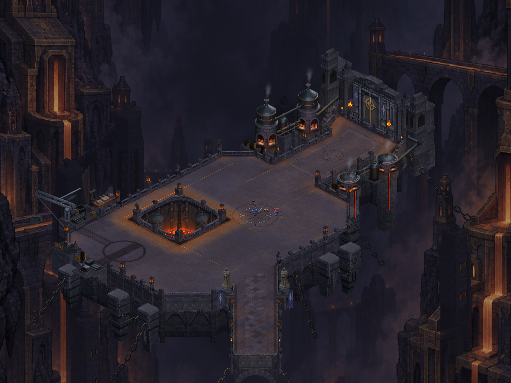
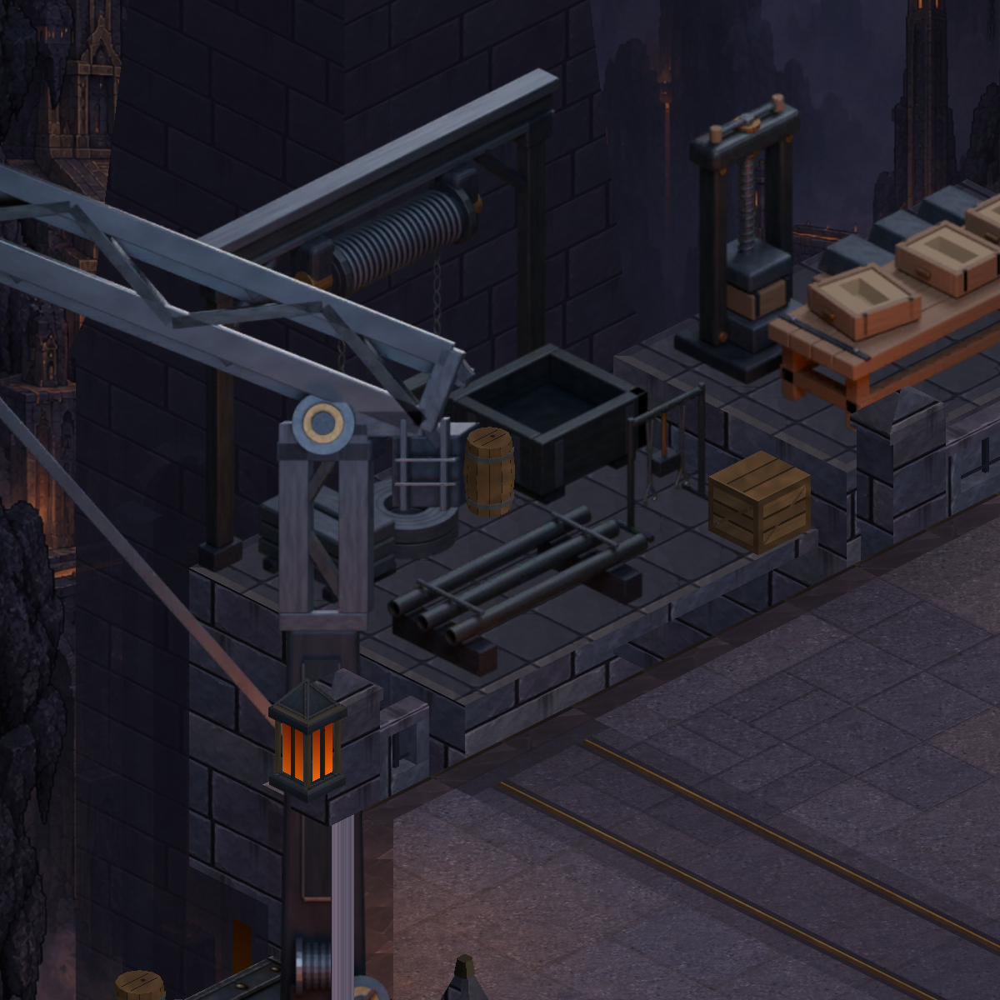
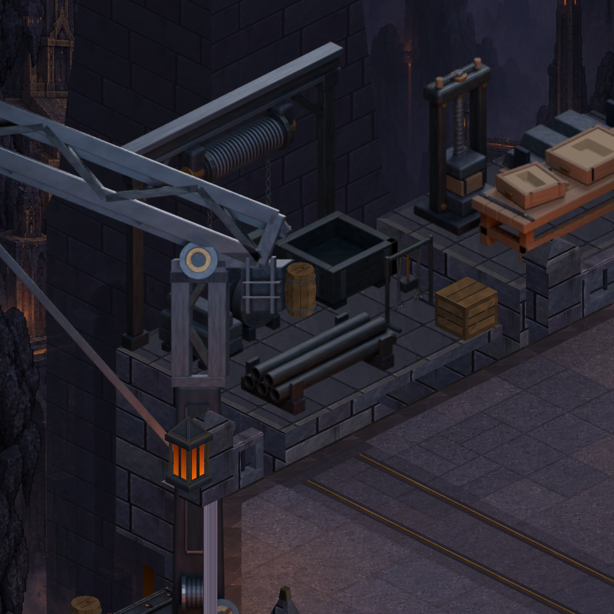
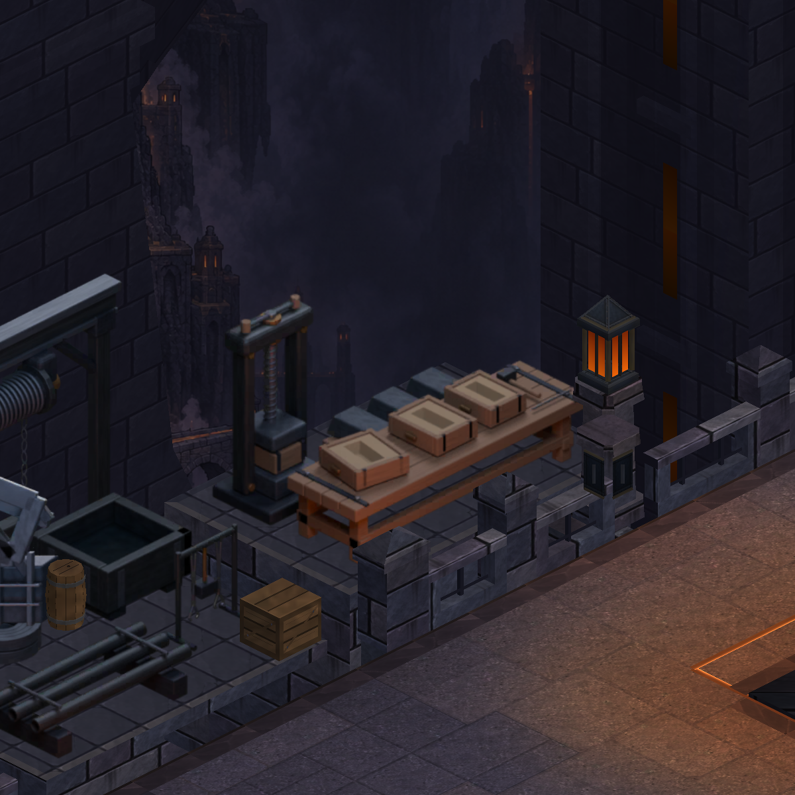
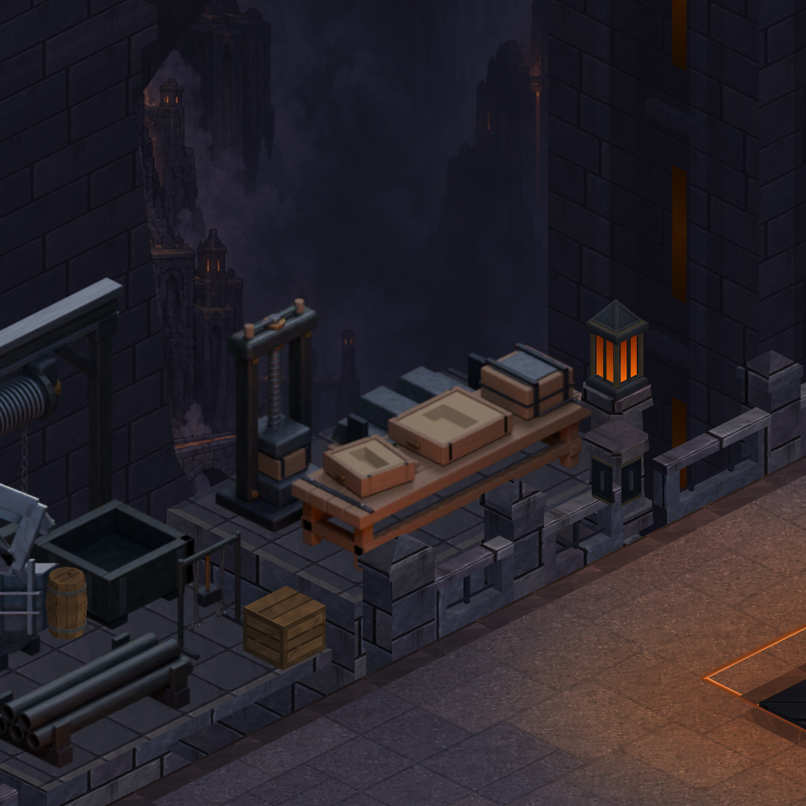

CRYPTFORGE · GERÇEK UNITY GÖRÜNTÜLERİ
Üretim alanı daha belirgin bir atölyeye dönüşüyor
Malzeme istasyonunda dik bobinler, beş boruluk destekli demet ve külçe yatağı; döküm tezgâhında açık kalıp, kenara ayrılmış kalıp yarısı ve pres için hazırlanmış kapalı kalıp. Aynı pakette kazanların işlevini anlatan donanım da karşılaştırılıyor.
Bunlar oyunun Unity görüntüleridir; telefon ekran görüntüsü değildir. Entegrasyon ve doğrulama durumu paket kaydında tutulur. Referansın atölye yerleşimi ve genel görsel zenginliği için hâlâ çalışma gerekiyor.

Sonra · gerçek Unity görüntüsü, eşleşen kamera.
Malzeme ve taşıma istasyonu

Önce · 10d5e01
Sonra · aynı kameraDöküm sürecinin farklı aşamaları

Önce
Sonra · aynı kameraDikey görüntüler oyun kamerasının genişliğini kullanır; karşılaştırma için kahraman yerleştirilmiş ve arayüz gizlenmiştir. Onaylı çizim hedefi gösterir, oyunun tamamlanmış hâlini göstermez. Referansı tam boy aç · Kapsam ve doğrulama